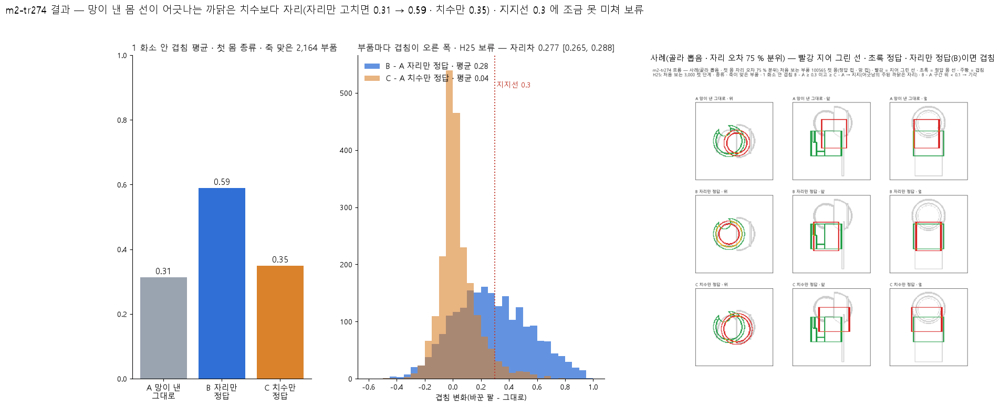

실험 m2_tr0274_h025_자리
목표 G1.2 view 모음 → 파츠별 CAD code(CadQuery · 그 전 「3 면도 → 파츠별 CAD」 · 지금 M2 는 위 · 앞 · 옆 고정 세 장만 받음 → 아무 각도 N 장으로 바꿀 것 · 11-20) · G1 첫 제품 — 피규어 · 메카 사진 여러 장 + 치수 → 숨은선 3 면도 + 파츠별 CAD · G0 임의의 이미지 → CAD 코드 · 빌린 가정 3: 생성기기하 · 정답3D · 정사영 · 갚는 계획: 진단 · 첫 단계(캔버스 없음)만 봄 · 정답 3면도 · 생성기 부품 — 지지면 찾은 몸의 자리를 그림 선에 맞춰 재는 벗김(벗김 + 맞춰 재기)으로 갚음 · 목표 시험지 값: 안 잼 (!)
벗김 망이 낸 몸 선이 진짜 몸 선과 어긋나는 주된 까닭은 자리(가운데로 몰림)인가 — 자리만 정답으로 바꾸면 겹침이 크게 오르나?
판정 · H25 보류(자리차 0.277 [0.265, 0.288] · 지지선 0.3 아래 · 치수차 0.037) — 망이 낸 몸 선이 어긋나는 까닭은 치수보다 자리가 훨씬 크지만(약 7.5 배) 미리 정한 선에 조금 못 미침 · 첫 몸 자리 오차 약 3 화소 · 퍼짐 0.8 · 다음: 찾은 몸의 자리를 그림 선에 맞춰 재는 벗김(벗김 + 맞춰 재기)은 자리 쪽 손잡이라 그대로 후보
| 가설 | 주장 | 결과 | 근거 |
|---|---|---|---|
| H25 | 벗김 망이 낸 몸 선이 진짜 몸 선과 어긋나는 주된 까닭은 자리다 — 자리만 정답으로 바꾸면 겹침이 크게 오르고 치수를 바꿀 때보다 더 오른다 | 보류 | 겹침 평균 A 0.313 · B 0.589 · C 0.349 · 자리만 고친 폭이 치수만 고친 폭의 약 7.5 배 · 첫 몸 종류 · 축 맞음 0.721 · 자리 오차 축별 가운데 0.026 · 0.027 · 0.028(약 3 화소) · 퍼짐 비 0.87 · 0.81 · 0.81 · 그리기 실패 0 |
분석
한 줄로
물음: 벗김 망이 낸 몸 선이 진짜 몸 선과 어긋나는 주된 까닭은 자리인가? 자리만 정답으로 바꾸면 겹침이 크게 오르나?
답: 거의 그렇지만 미리 정한 선에는 조금 못 미친다(H25 보류). 자리만 정답으로 바꾸면 겹침이 0.31 → 0.59 로 오르고(+0.28), 치수만 바꾸면 0.35(+0.04)다. 어긋남은 치수보다 자리 탓이 훨씬 크다. 지지선은 +0.3 이었다.
왜 이 실험을 했나
m2-tr273 에서 흐림 굵힘을 넓혀도 벗김은 멈추지 못했다. 사용자가 「이게 돔을 찾은건지는 모르겠는데?」 라고 물어 돔을 세 장으로 겹쳐 보니, 망이 낸 돔의 깊이 자리가 크게 어긋나 있었다. 사례 하나였으므로 처음 보는 3,000 전체에서 자리와 치수 중 무엇이 어긋남의 까닭인지 가렸다.
바꾼 것 하나
망이 낸 첫 몸(캔버스 없음 · 노출 차 없음)의 숫자를 하나씩 정답으로 바꿨다. A 그대로 · B 자리만 정답 · C 치수만 정답. 각각 지어 그린 선이 정답 몸 선 1 화소 안에 드는 비율(위 · 앞 · 옆 평균)을 쟀다. 종류 · 축이 맞은 첫 몸(2,164)만 판정에 썼다. 카드는 돌리기 전에 커밋했다(e639bad6).
결과

| 첫 몸 종류 · 축 맞은 2,164 | 1 화소 안 겹침 |
|---|---|
| A 망이 낸 그대로 | 0.31 |
| B 자리만 정답 | 0.59 |
| C 치수만 정답 | 0.35 |
| 가설 | 결과 | 판정선 | 판정 |
|---|---|---|---|
| H25 자리차(B - A) | 0.28 [0.27, 0.29] · 치수차 0.04 | ≥ 0.3 이고 ≥ 치수차 지지 · 위 < 0.1 기각 | 보류 |
Lean: 보류라 칸이 안 채워져 「판정 못 채움」.
왜 이렇게 나왔나
확인한 것
- 자리만 고친 폭(0.28)이 치수만 고친 폭(0.04)의 약 7.5 배다.
- 첫 몸의 자리 오차는 축마다 가운데 약 0.027(약 3 화소)이고, 예측 자리가 정답보다 조금 가운데로 모인다(퍼짐 0.81 ~ 0.87).
- 자리를 정답으로 바꿔도 겹침은 0.59 — 1 화소 안 셈이라 치수 차 · 래스터 차도 남는다.
짐작 (아직 확인 안 함)
- 첫 몸은 3 화소 안팎이지만, 뒤 단계(캔버스가 섞임)에서는 어긋남이 더 커진다(tr273 돔 사례: 깊이 0.24).
한계
- 첫 단계만 · 종류 · 축 맞은 부품만 봤다. 1 화소 안 겹침은 크기 차에도 민감하다.
- 흐름 그림 사례는 골라 뽑았다(자리 오차 75 % 분위).
배운 것과 다음
벗김의 어긋남은 치수보다 자리 탓이 훨씬 크다(판정은 보류).
- 찾은 몸의 자리를 그림 선에 맞춰 잰 뒤 흐리는 벗김(벗김 + 맞춰 재기) — 자리 쪽 손잡이.
- 마스크 질의(규칙 답 대기) · 노출 차를 막는 학습과 같은 시험지 · 진척판 자로 견줌.
실험 기록
- 카드(돌리기 전 커밋 e639bad6 · H25_Q_원인 · 식 · 판정식 · Lean 증명 나무 하네스/lean/증명나무_tr0274.H25.png) · 자리274.py(흐름 · 예측 · 그리기 · 재기 · 그림) · 잼.json · 흐름.png · 결과.png · 원본 out/설명/캐드부품/모델274(첫단계 · 세팔 · 겹)
- 돌리다 난 사고(제 실수 둘): 반복문 안에서 npz 배열을 매번 꺼내 MemoryError(기억 「npz 배열은 한 번만」 을 어김) · 고치며 줄 중간에 주석을 넣어 코드가 주석이 됨(NameError) — 고친 뒤 다시 돌림.